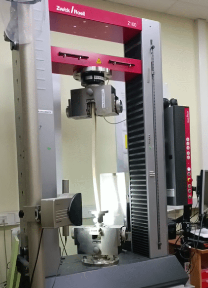
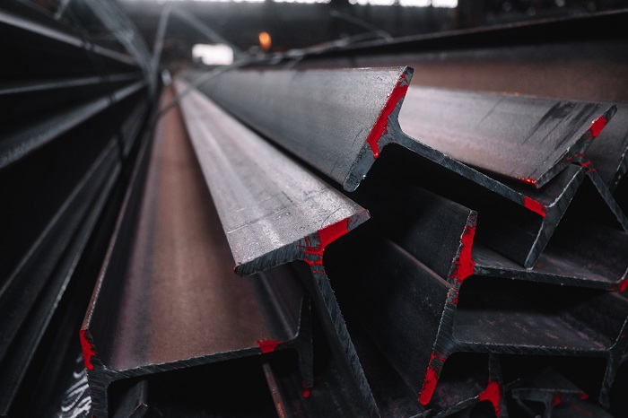
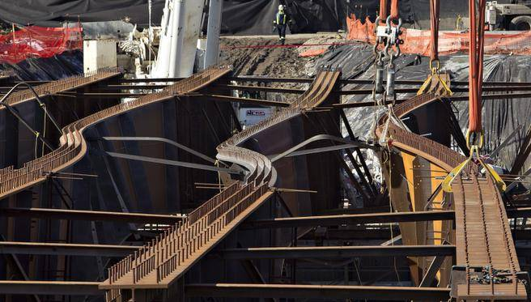
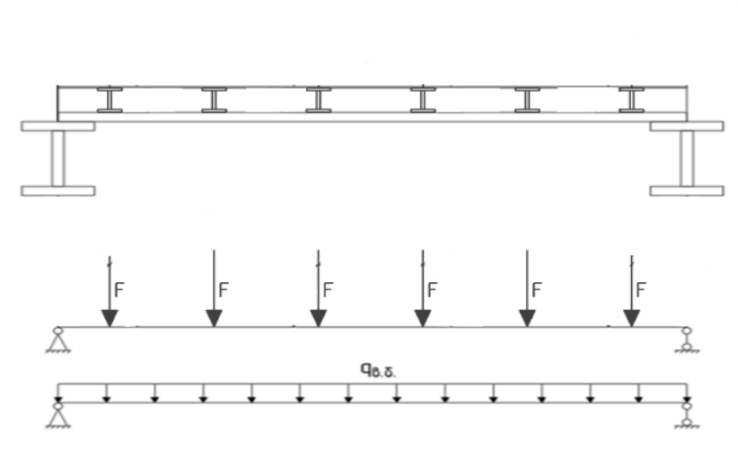

1.7. Конструкция и расчёт вспомогательных балок в балочной клетке усложнённого типа
Подбор сечения по прочности и жёсткости с обязательной проверкой общей устойчивости
Постановка задачи
Опять же расчет прокатной балки, аналогичный пункту 1.4. Величина пролёта совпадает с шагом главных балок $l_{\text{в.б.}} = B$. А вот нагрузка теперь будет другая. Площядная нагрузка будет определяться пролётом вспомогательных балок $a_{\text{в.б.}}$. Плюс вес балок настила уложенных сверху.
Но помимо расчета балки на прочность и жесткость, нужно проверить балку на общую устойчивость. Устойчивость могут потерять гибкие элементы, подвергающиеся продольному сжатию. Если какой-то стержень сжимать вдоль его продольной оси, то рано или поздно его выпучит в сторону (Рис.1).

Но у нас то балки изгибаются, нагрузка с боку на них действует. Откуда взяться потеря устойчивости то? Ну да, балка, как целое, изгибается, но нету ли какой-то её части, которая сжимается? Помните что при изгибе какие-то волокна сжимаются, а какие-то растягиваются? Если бы у нас была балка просто прямоугольного сечения, то это было бы не страшно. Но у нас двутавр, и у него один пояс растягивается, другой сжимается. Если посмотреть на этот пояс в отдельносте, то он представляет собой длинную тонкую полоску металла (Рис.2). Чем не гибкий стержень? Вниз она выпучится не может, там стенка двутавра мешает, а вот вбок (из плоскости изгиба) может (Рис.3).


Балки настила мы не проверяли на устойчивоть потому что по СП 16.13330.2017 в пункте 8.4.4 регламентируется когда нужно оценивать устойчивость, а когда нет. Там сказанно:
Тоесть если сжимаемый пояс закреплён по всей длине, то он не может потерять устойчивость, а балки настила у нас как раз такие.
Порядок расчёта
-
Нагрузки от веса настила и балок настила
$$g_{н,n} = \rho_{\text{ст}} \cdot t_{\text{н}} \cdot g \qquad g_{б.н.,n} = \frac{\gamma_{\text{б.н.}} \cdot g \cdot k_{\text{б.н.}}}{l_{\text{в.б.}}}$$
где $\gamma_{\text{б.н.}}$ — погонная масса балки настила; $k_{\text{б.н.}}$ — количество балок настила на пролёте уложанных сверху вспомогательной балки.
Мы рапределяем вес балок настила по вспомогательной балка. В реальности это несколько ($k_{\text{б.н.}}$) сосредоточенных нагрузок, но принимается что можно их заменить одной распределённой.

Рис. 4 Сосредоточенная нагрузки от балок настила как одна распределённая -
Погонные нормативные и расчетные нагрузки на вспомогательную балку
$$q_{n,\text{в.б.}} = (q_n + g_{н,n} + g_{б.н.,n}) \cdot a_{\text{в.б.}}$$
$$q_{\text{в.б.}} = (q + g_{н,n} \cdot \gamma_f + g_{б.н.,n} \cdot \gamma_f) \cdot a_{\text{в.б.}}$$
где $\gamma_f = 1.05$ - коэффициент запаса для собственного веса стальных конструций.
-
Подбор сечения двутавра
Всё то же самое что и в п. 1.4
-
Провера необходимости проверки на устойчивости
Вы могли заметить что в описании этого пункта из СП было взято условие "а)", значит есть и другие. А конкретно только одно: "б)". В нем говорится что нужно оценивать устойчивоть только если условная гибкость сжимаемого пояса $\bar \lambda_b$ превышает предельные значения $\bar \lambda_{ub}$:
$$\bar \lambda_b = \frac{l_{\text{в.б.}}}{b_f} \sqrt{\frac{R_y}{E}} > \bar \lambda_{ub}$$Чтобы найти этот $\bar \lambda_{ub}$ использутся формулы из того же пунктра СП для разных случаев. Мы возьмём универсальную:
$$ \bar \lambda_{ub} = \delta \left( 0{,}35 + 0{,}0032 \frac{b_f}{t_f} + \left(0{,}76 - 0{,}02 \frac{b_f}{t_f}\right) \frac{b_f}{h_f} \right) $$где $b_f$ - ширина пояса двутавра, $t_f$ - толщина пояса, а $\delta$ — некий мистический коэффициент, в случае если мы производим расчет только в пределах упругой фазы он равен 1, а если в упругопластической стадии (используем коэффициент $C_1$), то нужно по формуле из СП рассчитывать, но забейте, используйте 0.4.
В СП уточняется что эта формула работает только если:
$$1 \le \frac{h_f}{b_f} < 6 \qquad \frac{b_f}{t_f} < 35$$$h_f = h - t_f$ — расстояние между осями поясов; $h$ - высота двутавра.
Но врядли у вас будет двутавр с неподходящими размерами.
В общем, если $\bar \lambda_b \le \bar \lambda_{ub} $, то всё норм, на этом подбор сечения вспомогательной балки заканчиваем. Если нет, идём далее.
-
Проверка на устойчивость
Как и при проверки на устойчивость сжатого стержня, используется формула на прочность, плюс коэффициент устойчивости:
$$\frac{M_{\max}^{*}}{C_1 \cdot W_x} \le \varphi_b \cdot R_y \cdot \gamma_c$$ $$\varphi_b = \Psi \cdot \frac{I_y}{I_x} \cdot \left(\frac{h}{l_{ef}}\right)^{2} \cdot \frac{E}{R_y}$$При $0{,}1 \le \alpha \le 40$ коэффициент $\Psi = 2{,}25 + 0{,}07\,\alpha$ (в остальных случаях — по таблицам Ж.1 и Ж.2 СП 16.13330.2017).
$$\alpha = 8 \left( \frac{l_{ef} \cdot t_f}{h_f \cdot b_f} \right)^{2} \left( 1 + \frac{1}{2}\,\frac{h_f}{b_f} \left(\frac{t_w}{t_f}\right)^{3} \right)$$Здесь $l_{ef}$ - длина незакрепленного участка. Дело в том что балки настила лежащие на вспомогательных балках прикреплены к ним сваркой или болтами и не дают в местах своего закрепления сдвгаится вспомогательной балке в с торону, то есть терять устойчивость. А вот в пространстве между балками, то есть в размере шага их может выпучить. Поэтому $l_{ef} = a_{\text{б.н.}}$
Если проверка прошла то всё ок, а если нет - придется взять двутавр побольше и повторять все расчеты заново.